The Profiler Panel, Field By Field
What every tab, bar, column and message in the Profiler means, and how to read it. For how the profiler works and how its numbers were checked, see How the profiler works.
Click any screenshot to open it at full size.
In 30 Seconds
- Pick A Time Span with Average over. Every number is an average per frame over that span. A frame is one screen refresh (1/60 s).
- Frame Tab: one bar per processor. Blue is busy, orange is stalled on the bus, grey is asleep, dark is switched off. A master SH-2 bar that is almost all blue means the game is using its whole frame.
- Buses Tab: how many memory requests each chip receives per frame, and how many bytes DMA moved.
- Memory Tab: a map of each RAM area. Blue blocks hold varied data, orange blocks just changed.
- Functions Tab: tick the box to see which game functions use the most processor time. The emulator runs several times slower while it is ticked.
- "Not Available" Never Means Zero. It means that value was not measured. "(3 of 4 frames)" means only some frames in the span measured it.
Opening The Panel
Open it from Windows → Debugger → Profiler. It docks beside Watch by default and can be dragged out into its own window.
The profiler reads a Running Game In The Patched Mednafen. Connect with Session → Source → Connect to Emulator (live). With a saved dump or savestate loaded, only the Memory tab has anything to show.
The panel keeps the last 3,600 frames (60 s) and still shows them while the game is paused or stopped at a breakpoint. Averages and History strips use the newest 600 (10 s).
Top Bar
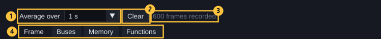
- Average Over. The span every figure on the Frame, Buses and Functions tabs is averaged over: Last frame, 0.5 s (30 frames), 1 s (60), 5 s (300) or 10 s (600). Short spans react quickly; long ones smooth out spikes. The History strips always show the newest 600 frames.
- Clear. Forgets every recorded frame and the Memory tab's last sample. Use it to start fresh, for example just before the part of the game you care about.
- N Frames Recorded. How many frames the panel holds, up to 3,600. A longer span averages only the frames that exist.
- Status Line. Empty while live. When you scrub back it names the frame shown, or says why there is no data (see Scrubbing Back). Long text ends in "..."; hover for the rest.
- Tabs. Frame, Buses, Memory and Functions, described below.
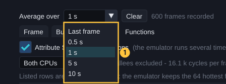
Frame Tab
Shows where each frame's time goes, processor by processor. The screenshot shows the V1 test program running a DMA transfer during a VDP1 draw.
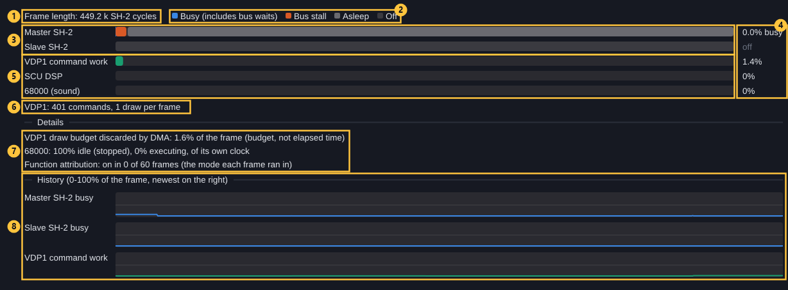
- Frame Length: N SH-2 Cycles. How long one frame is, counted in SH-2 clock cycles (about 449 k for a 60 Hz game). Every percentage on this tab is a share of this.
- Legend. The four colours of the processor bars:
- Busy (Includes Bus Waits), blue: time spent running code. It includes time waiting on slow memory, which is not shown separately.
- Bus Stall, orange: the SH-2 was held off the bus by a DMA transfer or an external halt.
- Asleep, grey: the SH-2 ran its
SLEEPinstruction and waited for an interrupt. Most games sleep until the next screen refresh once their work is done. - Off, dark: the slave SH-2 was powered down. Games that do not use the second processor show it off throughout.
- Master SH-2 And Slave SH-2 Bars. Each bar is one processor's frame split into the four colours. Hover a segment to see its name and percentage. A mostly blue master bar means the game uses nearly all of its frame and is close to slowing down.
- Value Column. The busy percentage for the SH-2 rows, or the share for the single-colour rows. off means the slave was powered down for the whole span. not available means no frame in the span measured that row.
- VDP1 Command Work, SCU DSP, 68000 (Sound). One bar each, as a share of the frame:
- VDP1 Command Work: the drawing work VDP1 (the sprite and polygon chip) did on its command table. It is work, not elapsed time, so it can go above 100% when the emulator draws instantly.
- SCU DSP: the SCU's small maths processor running its program. Many games do not use it.
- 68000 (Sound): the sound processor executing, as a share of its own clock.
- VDP1: N Commands, N Draws Per Frame. How many VDP1 commands were read and how many drawing passes started, per frame. If some draws were cut short, an orange N unfinished appears after it: the frame buffer swapped, or drawing restarted, before VDP1 reached the end of its list. A steady count of unfinished draws means VDP1 cannot keep up.
- Details. Extra figures from current emulator builds:
- VDP1 Draw Budget Discarded By DMA: drawing time VDP1 lost because a DMA was writing to its memory. It is a budget, not elapsed time.
- 68000: X Idle (Stopped), Y Executing, Of Its Own Clock: the sound processor's split between stopped and running.
- Function Attribution: On In k Of n Frames: how many frames in the span ran with the Functions tab's timing switched on.
- VDP1 Command Work Exceeds The Frame In N Frames (only when it happens): those frames drew in instant mode, so their work figure is above 100%.
- Lost Records (only when some were lost): see Lost Records.
- History (0-100% Of The Frame, Newest On The Right). One line per measure over the newest 600 frames: Master SH-2 busy, Slave SH-2 busy and VDP1 command work. The faint middle line is 50%. A frame that did not measure the value shows a short grey tick, and the line breaks where frames are missing.
Other Workloads
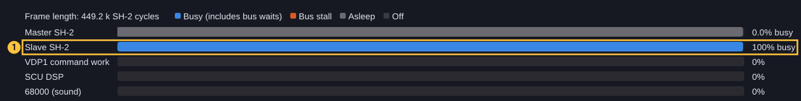
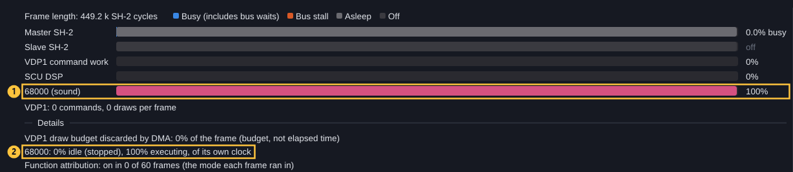

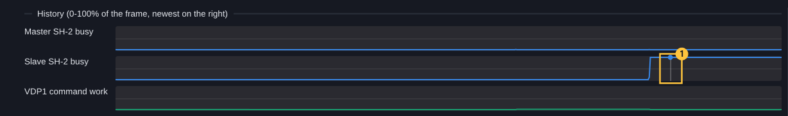
Frame 15219 (timeline 1) and 100%. The timeline number changes when the machine state is replaced, for example by loading a state. An older emulator shows Frame: not available (this emulator does not number its frames).Lost Records

- Lost Records. Frames the panel never received. Dropped: Saturn Explorer fell behind the emulator, which keeps only its last 16 frames. Evicted: the panel fell behind Saturn Explorer. The bracket gives both counts for the current span. Averages stay correct, over fewer frames.
- Break In The History Lines. The lines stop and restart where frames are missing.
Buses Tab
Shows how busy each part of the memory system is. The Saturn has three buses: the CPU Bus (the SH-2s' own memory), the A-Bus (cartridge slot and CD block) and the B-Bus (sound, VDP1 and VDP2). The screenshot shows V1's bus test, which makes a known number of requests to every device.

- SH-2 Bus Requests Per Frame. The table's unit: requests the SH-2s' bus controller sent to memory. One 32-bit access is one request, even when the hardware splits it. A cache line fill counts as four; a read served from the cache counts as none. Hover Writes in the legend to see this in the app.
- Cache Mode. Whether the emulator models the SH-2 instruction cache: instruction cache emulated or instruction cache not emulated. Request counts depend on it, so only compare runs in the same mode. both emulated and not emulated in this window means the mode changed during the span. not available (the game has not set it yet) appears before the game has started.
- Bus Rows (CPU bus, A-bus, B-bus, in grey). The total of the device rows under each bus.
- Device Rows. One row per memory area:
Bus Devices CPU bus Boot ROM, SMPC, backup RAM, low work RAM, other CS0, SCU registers, high work RAM A-bus Cartridge CS0, cartridge CS1, CD block B-bus SCSP and sound RAM, VDP1, VDP2 - Reads, Writes. Requests per frame, averaged over the span. Large numbers are shortened: 12.5 k is 12,500, 1.20 M is 1.2 million.
- Share Of The Busiest Device. Each device's bar is scaled to the busiest device in the span, reads in blue and writes in orange. It shows at a glance where the traffic goes; the numbers on the left are the actual counts.
- Not On Any Bus, Per Frame. Requests to addresses that belong to no device: the A-bus dummy area and unmapped gaps. A healthy game makes few. Steady counts usually mean a program bug, or a test like V1 doing it on purpose. An older emulator counted these in the CD block, VDP2 and SCU rows; for such frames the line reads A-bus dummy area and unmapped requests: not available.
- SCU DMA Per Frame. For each of the SCU's three DMA channels (Level 0 to Level 2): Transfers started per frame and Bytes requested per frame. An aborted transfer is still counted in full.
- No SCU DMA In This Window. Shown instead of routes when no DMA ran in the span.
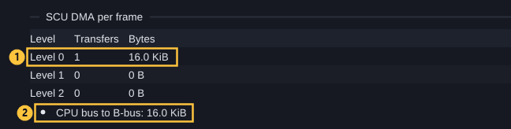
The SH-2 has two DMA channels of its own. Their transfers appear as reads and writes in the device rows, not in the SCU DMA table.
Memory Tab
A block map of the six fixed RAM areas, coloured by what they contain. It works on any source, including saved dumps and savestates. It samples a few times a second, only while this tab is showing.

- Legend. The three cell colours:
- Uniform, dark: the block is one byte value repeated, for example cleared memory. That does not mean the game is not using it.
- Non-Uniform, blue: the block holds more than one byte value, so something has been written there.
- Changed Since Sample, orange: the block's contents differ from the previous sample. It fades back to blue over the next samples if nothing changes again.
- Heading Line. The area's name, size and start address, then the share of its blocks that are non-uniform and the share that changed since the last sample. The areas are High work RAM, Low work RAM, VDP1 VRAM, VDP2 VRAM, Colour RAM and Sound RAM.
- Cell Grid. Each cell is one block of the area, read left to right and top to bottom. An area is split into at most 1,024 blocks. Hover a cell to see its address range and state (Uniform, Non-uniform, Changed recently or Changed since the last sample). Click it to open that address in the Memory panel.
- VDP1 VRAM. The copy taken when VDP1 last finished drawing, so a change here means a draw finished, not that the game wrote at that instant. Before the first draw after boot or a state load, it is the live memory.
"Changed" compares two samples of the same capture. Sampling starts over, with nothing marked changed, when you switch source, the emulator restarts, the machine state is replaced (rewind, state load) or the displayed frame goes backwards. A jump never shows up as a change.
Functions Tab
Shows which game functions use the most SH-2 time. It is off by default because it slows the emulator down: the emulator has to look at every instruction both processors execute.

- Attribute SH-2 Time To Functions. Switches function timing on in the emulator. The note beside it says (the emulator runs several times slower while this is on). It takes effect at the next frame. Timing also stops when you close the Profiler panel, so the emulator is never left in the slow mode.
- CPU Filter. Both CPUs, Master SH-2 or Slave SH-2: which processor's functions to list. Shares are recomputed for the chosen processor.
- Self Time, Callees Excluded - N Cycles Per Frame Attributed. Time is charged to the function that is running, not to its caller. N is the total charged per frame: the 100% for the Share column.
- Which Functions Are Listed. Each frame the emulator tracks up to 3,072 functions and keeps the 64 that used the most time. The rest is added into Other, so nothing is dropped from the total.
- Columns. Function, CPU (Master or Slave), Cycles/frame (SH-2 cycles per frame, averaged over the span) and Share (of the attributed total above).
- Named Rows (
sub_010468, or a name from your symbols). A function entered by a recorded call, named by its start address or by the name you gave it. Double-click a row to open it in the SH-2 Assembly panel. - Address Rows (
at 06010030). Code with no recorded call, usually because it was already running when timing began or is an interrupt handler. It is listed by a 16-byte address range instead of a guess. If Saturn Explorer knows the function containing that address, the row is merged into it. - Other (Not Listed). Time measured for functions that have no row. Hover it for the split: not admitted to the per-frame table (functions first seen after the table held 3,072), below the top 64 of their frame, and with an older emulator from an emulator that does not split it.
- Not Observed (Estimate). Busy time that no instruction was charged for, for example just after attribution was switched on or after a reset. It is an estimate from the Frame tab's counters, not a measurement, and is not part of Other or the percentages.
- Bar. Each row's cycles relative to the hottest function. Other's bar is grey.
Notes that appear above the table only when they apply:
| Note | Meaning |
|---|---|
| N of M frames in this window carry the per-CPU split and are used. | With one CPU chosen, only frames that say which processor the unlisted time belongs to can be used. Older emulators do not say. |
| The table filled in N of M frames… | More than 3,072 functions ran in those frames. Later ones were not tracked separately; their time is in Other. |
| More than 64 functions ran in N of M frames… | The smallest were folded into Other for those frames. Normal for a large game. |

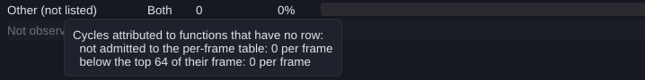


Scrubbing Back
While the game runs, the panel shows the newest frame. When you pause and scrub back, the Frame, Buses and Functions tabs switch to the frame you are looking at.
- Figures. Every bar, table and count is for the scrubbed frame. A longer Average over span averages the frames ending at it, not the newest ones.
- Status Line. Reads
Showing frame N (scrubbed), newest is M. It is empty while live or when scrubbed to the newest frame. - History Strips. A red line with a small triangle marks the scrubbed frame. If that frame is more than 600 frames back, the strip shifts so the mark stays in view, and its heading says the red mark is the frame shown.
- No Data. The tab says
No Profiling Dataand the status line gives the reason. This is normal for frames more than 3,600 back, frames from before Clear, or an emulator that does not report timelines. - After A Rewind. A rewind (Play From Here) or a state load starts a new timeline:
- Matching. A replayed frame is never shown with the figures of the frame it replaced.
- Averaging. A span stops at the rewind and averages only the frames since, on every tab, live or scrubbed.
- Status Note. When the span was cut short, the status line adds
Averaging k of n frames (the rest are from before a rewind or state load). The "of n" counts on the tabs use the shortened span too. - History Strips. The line breaks at the rewind, with a faint vertical divider. Scrubbed to a frame from before the rewind, the strips end at the red mark, because the frames that followed were replaced.
- Memory Tab. Unchanged: it samples the memory of whichever frame is displayed.
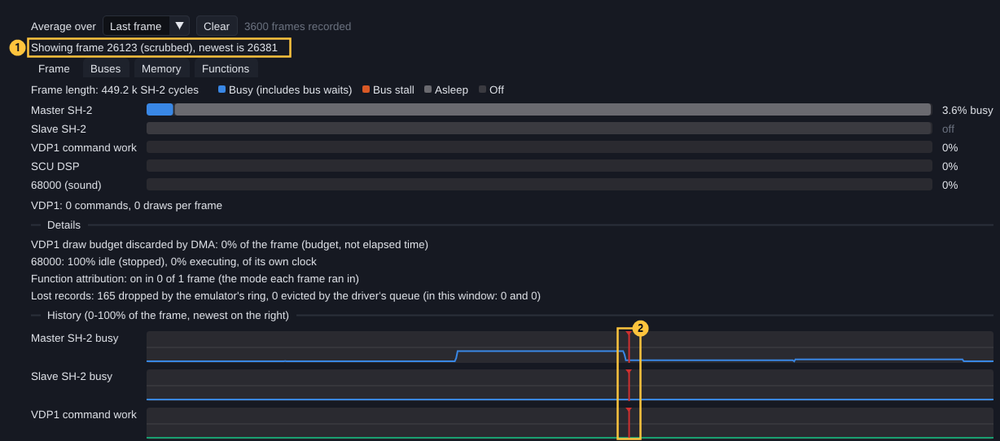
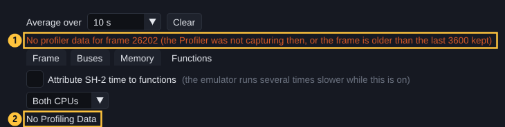
No Profiling Data (2), and no figures are drawn.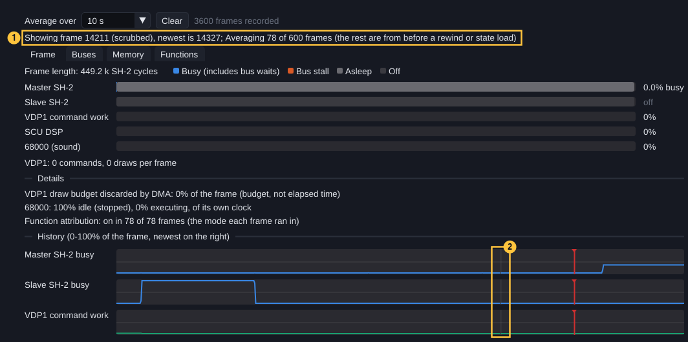
Messages And States
| Message | Where | Meaning |
|---|---|---|
| The profiler measures a running game. Connect to a live emulator (Session > Source > Connect to Emulator)… | Frame, Buses | Nothing is connected. Connect with Session → Source → Connect to Emulator (live). |
| This emulator build does not report profiler counters. Rebuild the patched Mednafen… | Frame, Buses | The connected Mednafen is older than the profiler. Run update.bat or update.sh. |
| Waiting for the emulator to finish a frame... | Frame, Buses | Connected but no frame recorded yet: just after connecting or Clear, or while the emulator is paused. |
| No data loaded. | Memory | No source is loaded at all. |
| The machine state was replaced. This emulator does not say which timeline each capture is of, so sampling resumes after N more captures. | Memory | Only with an older emulator, after a state load or rewind. The tab waits until it is sure the memory it reads is from after the load. |
| Area (size) not in this capture | Memory | The loaded source does not contain that RAM area, for example a dump without sound RAM. |
| (needs a live emulator) | Functions | The checkbox is greyed out until you connect. |
| (needs a Mednafen built with --enable-debugger and the current patch) | Functions | The connected Mednafen cannot time functions. Rebuild it with the installer. |
| No Profiling Data | Frame, Buses, Functions | Scrubbed to a frame the panel has no record of. The status line gives the reason. See Scrubbing Back. |
| Averaging k of n frames (the rest are from before a rewind or state load) | Status line | A rewind or state load cut the Average over span short: the figures average only the k frames since it. |
| No attributed frames in this window. | Functions | Attribution is off, or was off for the whole span. |
| Waiting for attributed frames... | Functions | Attribution is on but no timed frame has arrived yet. It stays while the emulator is paused or at a breakpoint. |
| No frame in this window carries the per-CPU split of the unlisted time (an older emulator). Choose both CPUs to see its functions. | Functions | With Master or Slave chosen on an older emulator. Choose Both CPUs. |
| not available | Frame, Buses | No frame in the span measured that value (an older emulator, or a figure the game has not produced yet). Never read it as zero. |
| (k of n frames) | after a value | Only k of the n frames in the span measured it. The value is the average over those k frames. |
| (all n frames) | 68000 row | Shown when the Details line's idle/executing split covers fewer frames: the bar averages every frame, the Details line only the k that measured idle time. |
| off | Slave SH-2 row | The slave processor was powered down for the whole span. |
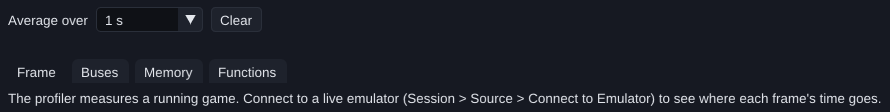
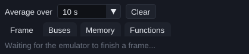


With An Older Emulator
A Mednafen built before the current profiler format still works, but shows fewer figures. The Frame tab shows VDP1 drawing (elapsed drawing time) instead of VDP1 command work, and has no Details section. If a span mixes old and new frames, both VDP1 rows appear, each over its own frames. They measure different things and are never added together. The Buses tab has no cache mode and no "not on any bus" line. Rebuilding with update.bat or update.sh brings everything back.
Terms
- Frame
- One screen refresh, 1/60 s on a 60 Hz game. The profiler's unit of time.
- SH-2 Cycle
- One tick of the main processors' clock: about 27 million per second, depending on the video mode.
- Master / Slave SH-2
- The Saturn's two main processors. Every game uses the master. Many leave the slave off.
- Span
- The frames chosen by Average over.
- Bus Request
- One request the SH-2 bus controller sends to memory, after the SH-2's cache.
- DMA
- A transfer that copies memory without the processor doing it. The SCU has three channels (levels).
- Self Time
- Time spent in a function's own instructions, not in the functions it calls.
- Attribution
- Charging processor time to the function that is running. The Functions tab's checkbox switches it on.
- Record
- One frame's measurements, sent from the emulator to Saturn Explorer.
Screenshots: Saturn Explorer and the patched Mednafen running the V1 validation program on Windows, dark theme. Most are from master at f61913a; the top bar, not-connected and scrubbing ones are from later builds.